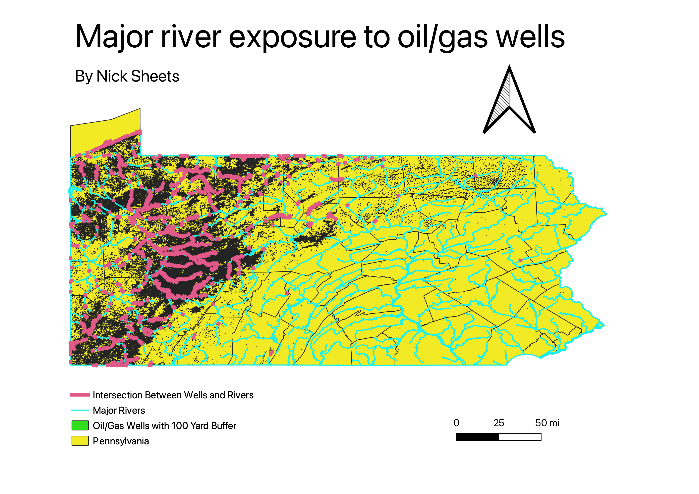

Homework 8: Geoprocessing Analysis Map
Nicholas Sheets
In this map, I used geoprocessing analysis tools in order to answer the question "how many major waterways are
exposed to oil or gas wells. In order to do this, I imported data for both major rivers in Pennsylvania and oil/gas wells
in Pennsylvania. Then I used the buffer tool to create a 300 foot buffer surrounding each well to account for potential
pollution and other harmful affects associated with natural gas wells. Then I used the "interect" feature to see how many
rivers overlapped with these potential hazardous buffer zones created by the wells. In the map we see that there is a heavy
concentration of intersections in Western Pennsylvania, which there has historically been a lot of mining and now fossil fuel
production.

Data used for this project
Link to original data for oil wells
Link to original data for rivers
Link to CSV for newly created "Buffer"
Link to CSV for newly created "Intersection"
Link to geoJSON for PA